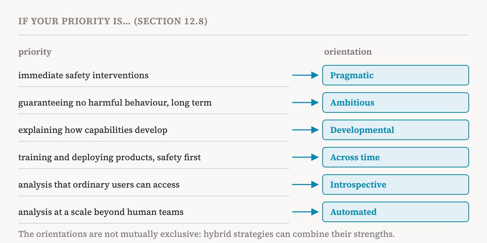

With part 30 the series finished the book's survey of methods. This part opens a short group on research directions. It covers the book's twelfth chapter, sections 12.1–12.4 and 12.7–12.9 (pages 102–105 and 111–112). Two of the six orientations the chapter describes, introspective and automated interpretability, get parts of their own: parts 32 and 33.
Orientations and methods
The book first separates two words. An orientation is a coherent research programme, defined by its goals, its assumptions and the trade-offs it accepts. A method is an established, modular pipeline that may be used within different orientations. A probe, for instance, can serve a team that wants a quick safety check and a team that wants a complete explanation. Different goals, such as building safety measures ready for use or reaching a complete mechanistic understanding, have produced distinct research programmes, and the book summarises six of them: what each aims at, what it assumes, which methods it favours, and where it falls short. Its main message comes first: no single orientation is preferable in general. The right choice depends on the research goal, the setting in which a model is deployed, the resources available, and which kinds of uncertainty one can live with.
Pragmatic interpretability
Pragmatic interpretability focuses on doing the research that helps most with longer-term goals in alignment and interpretability, such as helping very capable AI go well. Its proponents argue that full mechanistic understanding is not needed to have a large impact, and that researchers should prioritise the work most likely to help. The central idea is to work on proxy tasks: concrete, measurable tasks that can be studied on today's models and that stand in for the problems of making powerful future models safe. Researchers in this orientation do not mind which methods they use, even methods that never look inside the model. And the proxy tasks are often useful for today's deployed systems as well, which gives valuable feedback.
The book's first example is the study of evaluation awareness in Claude Sonnet 4.5. The model was shown to change its behaviour when it detected signs that it was being evaluated, the problem part 2 described, which made safety evaluations designed for earlier models harder to interpret. Researchers found a steering vector that suppressed this awareness and applied it, so that the model's actual behaviour could be evaluated. The study did not fully explain the mechanism of evaluation awareness. But it was enough to produce a concrete change in behaviour that matters for safety, which is the pragmatic philosophy in action.
The second example is an auditing game from 2025. Researchers fine-tuned a model to pursue a hidden goal, then gave it to teams of auditors who did not know the goal and had to discover it. This served as a proxy for detecting a hidden goal that might emerge naturally in a future model. Because the teams used different techniques, the researchers could compare how well each worked.
Common tools in this orientation include steering vectors, probes, behavioural monitoring and anomaly detection, such as watching the reasoning a model writes out, and prompting, which is an effective baseline that needs no access to the internals. Work in this style has achieved effective control of refusal, as in part 25, and of evaluation awareness. These are direct gains for current systems. But they may not explain, and are not designed to explain, how models implement their behaviours.
Ambitious interpretability
Ambitious interpretability, in contrast, seeks a comprehensive mechanistic understanding of how models carry out their computations. Its proponents argue that partial or surface-level understanding cannot guarantee the safety of the next generation of systems, and that full understanding is needed to rule out hidden failure modes or deceptive internal dynamics. It does not treat interpretability as a collection of useful heuristics. It treats it as a scientific objective: to reverse-engineer the model and develop a transparent, predictive theory of its internal algorithms.
This orientation stresses progress driven by metrics. Because existing mechanistic methods still struggle with strict metrics, it proposes starting with looser ones, tracking and improving methods' performance on them, and adopting stricter metrics when that becomes realistic. The book gives two example metrics. The first is feature quality: showing that the features found, and their explanations in words, are faithful and simulatable, meaning that someone reading an explanation could predict when the feature fires (part 33 shows how this is tested). The second is circuit faithfulness: showing, by causal intervention such as the causal scrubbing of part 18, that a circuit is necessary and sufficient to explain a behaviour, without loss of performance.
The drawback is cost. Fine-grained mechanistic analysis of large frontier models is computationally expensive and sometimes intractable, and current tools still fall far short of the coverage and robustness that a truly comprehensive understanding would need.
The models built to be read, from part 15, blur the line between the ambitious and pragmatic orientations. They change the architecture so that representations and circuits are easier to understand, instead of relying entirely on reverse-engineering afterwards. That is a practical change in design that pursues the ambitious goal. It is still unclear whether such models can lead to complete mechanistic understanding, and in the short term they may amount to a separate "engineering" orientation, in which interpretability is one more objective to optimise.
Developmental interpretability
Developmental interpretability treats the training process itself as an object of scientific study. From the perspective of learning theory, it aims to describe mathematically how a model's representations, effective complexity and capabilities emerge and change throughout training. Its central claim is that many properties of a network that are hard to analyse in a single fixed checkpoint can be understood through how they developed. That development has measurable signatures, such as developmental stages and phase transitions, which can serve as proxies for the properties of interest. The classic example is the local learning coefficient, the LLC of parts 26 and 27, a signature of effective complexity that lets researchers observe developmental transitions and compare two models with the same training loss.
Its methods include singular learning theory and related mathematics, which describe developmental stages, symmetry breaking and changes in the geometry of the loss landscape, and analysis across checkpoints, which applies probes, feature-finding methods and circuit analysis to a model's training checkpoints. Typical questions are: Can the development of a capability be described as a phase transition? Which developmental stages come before a given mechanism forms? How does optimisation turn distributed representations into structured mechanisms? Its primary goal is rigorous scientific explanation, not predicting or intervening on capabilities.
Interpretability across time
Interpretability across time also treats a model as a process that changes over time, shaped by its training data, loss function, architecture and optimisation. The difference is in the goal. Developmental interpretability mainly describes the processes that give rise to features, mechanisms and capabilities. Interpretability across time seeks knowledge of learning that is predictive enough to estimate important properties of a model before training is finished, causal enough to identify when and why undesirable trajectories arise, and precise enough to allow interventions on the learning process itself. From a safety perspective, it aims to understand and eventually shape training so that a model never develops undesirable behaviours, rather than repairing them afterwards.
It builds on three areas of research that parts 26 to 28 described: scaling laws, which motivate similar efforts to predict safety-relevant properties; longitudinal studies of how mechanisms develop; and studies of how the training data affect later behaviour. Its methods are the longitudinal analysis of internals, monitoring training runs to forecast later behaviour, and interventions in the training process.
The book lists several findings that motivate it. Activations measured before fine-tuning can predict alignment scores after fine-tuning. Internal features associated with emergent misalignment could sometimes detect it before behavioural evaluations did. And training models to exploit fairly simple flaws in their reward can lead to more serious failures, including reward tampering, where a model interferes with the process that computes its own reward, and broader misaligned behaviour. Findings like these motivate watching for early signs of undesirable behaviour during training instead of evaluating only the final model. Another line of work tries to shape models directly, through the data filtering and gradient routing of part 28.
The book flags a common confusion. A 2026 position paper contrasts this orientation with the habit of "fixing it in post", but it would be a mistake to read it as dismissing everything done after pretraining. Post-training is itself a training process, and behaviours such as sycophancy and reward hacking arise mainly during, and because of, post-training. The criticism is aimed at cases where post-training patches an undesirable behaviour instead of understanding why it developed. The core distinction is between understanding and controlling a training process, and applying optimisation pressure to suppress behaviours already learned. The orientation also combines with others. It can be pragmatic, using a simple probe as an early warning, or ambitious, seeking a mechanistic theory of why a circuit forms under gradient descent.
Two more orientations
The remaining two orientations take the next two parts. Introspective interpretability uses the model as its own explainer, simply by asking it. Automated interpretability replaces human analysis with automated pipelines in order to scale.
Comparing the six
The book compares the six in a table, along their main focus, the metrics they use, their main tools, how soon they are expected to have an impact, how well they scale, and how robust they are to a model that tries to deceive.
![A chart placing the six orientations by expected time to impact (short, medium, long) on the horizontal axis and by scalability (low, medium, high) on the vertical axis. Pragmatic sits at short-term and high; automated at short-term and medium; introspective at medium and high; across time at medium and medium; ambitious and developmental at long-term and low. Each name carries a note on its robustness to a deceptive model: high for ambitious, medium for pragmatic, low for introspective and automated, and unknown for developmental and across time.](../../images/inside-31-map-en.png)
None of them is preferable in general. Automated interpretability, for example, can scale analysis to millions of features in frontier models, but faces problems such as errors that spread and humans trusting automation too much. Ambitious interpretability can provide fundamental analysis grounded in theory, but its results so far come mainly from small, controlled settings, such as the toy models of part 8, and whether they transfer to frontier models is unclear.
| Orientation | Main focus and key measure | Time to impact / scalability / robust to deception |
|---|---|---|
| Pragmatic | Safety interventions now, without complete understanding; performance on proxy tasks | Short / high / medium |
| Ambitious | Complete causal understanding, whatever it costs; faithfulness and simulatability | Long / low / high |
| Developmental | How representations, mechanisms and capabilities develop; transition signatures such as the LLC | Long / low / unknown |
| Across time | Predicting and controlling future behaviour through training; accuracy of forecasts and interventions | Medium / medium / unknown |
| Introspective | Models explaining themselves; agreement of self-reports with real mechanisms | Medium / high / low |
| Automated | Discovery at scale through pipelines; coverage, robustness and faithfulness | Short / medium / low |
Choosing an orientation
The book then offers a simple decision framework: the researcher's priorities and constraints decide the orientation.

For teams or individuals focused on immediate safety interventions, pragmatic interpretability fits best. If the main goal is to guarantee the absence of harmful behaviour in the long term, ambitious interpretability is the most appropriate. Researchers who want to describe and explain how capabilities develop may choose developmental interpretability. Teams that train and deploy language-model products with a focus on safety may focus on interpretability across time. When the aim is to offer interpretability analysis that ordinary users can access, introspective interpretability is promising. And automated interpretability is attractive when analysis must be done at a scale impractical for human investigators alone. The orientations are not mutually exclusive, and hybrid strategies can combine their strengths.
Tensions and open questions
The chapter's last section names the tensions within and between the orientations. Pragmatic research prioritises practical safety measures, while ambitious research argues that real safety requires complete understanding. Developmental interpretability and interpretability across time both depend on access to training checkpoints and optimisation dynamics, which remain hard to obtain. Introspective models can give accessible explanations, but safety-critical decisions may always need further verification. Automated pipelines can analyse large models, but the comprehensive analysis they deliver may be hard for humans to inspect and verify. Given these trade-offs, the book concludes, deciding how to divide research effort among the orientations is itself an open challenge, and not a technical one.
| Term | Meaning |
|---|---|
| Research orientation | A research programme defined by its goals, assumptions and trade-offs |
| Method | A modular pipeline that different orientations can use |
| Pragmatic interpretability | Doing the work that helps safety most, judged on proxy tasks |
| Proxy task | A measurable task on today's models that stands in for a future safety problem |
| Auditing game | Teams who do not know a model's planted hidden goal trying to find it |
| Ambitious interpretability | Aiming at a complete mechanistic understanding of a model |
| Simulatable | Clear enough that someone could predict a feature's activity from its explanation |
| Developmental interpretability | Explaining how structure and capabilities develop during training |
| Interpretability across time | Predicting and shaping behaviour through the training process |
| Reward tampering | A model interfering with the process that computes its own reward |
| Fixing it in post | Patching bad behaviour after training without understanding why it arose |
Next, part 32 turns to introspective interpretability: can a model explain itself, and how would we check?